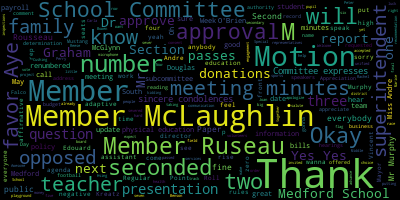
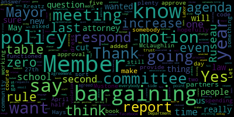
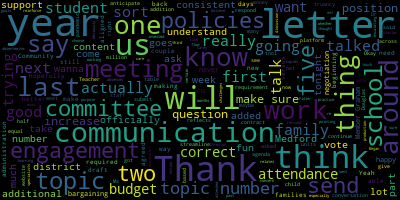
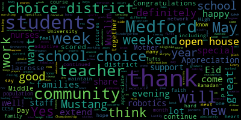
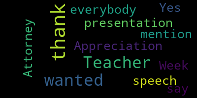

AI-generated transcript of 5.2.2022 - Regular School Committee Meeting
English | español | português | 中国人 | kreyol ayisyen | tiếng việt | ខ្មែរ | русский | عربي | 한국인
Back to all transcripts
[U1EIl_L-LWc_SPEAKER_00]: And seven present, zero absent.
[Lungo-Koehn]: Do we have any student representatives on the call? Student reps were invited. We don't see them on yet. Okay. If we could all rise to salute the flag.
[SPEAKER_15]: I pledge allegiance to the flag.
[U1EIl_L-LWc_SPEAKER_00]: Next up, we have number three, good of the order.
[Lungo-Koehn]: Would anybody like to speak under good of the order? We have number four, consent agenda, bills and payroll. Regular school committee meeting minutes from 4-11-2022. Special school committee meeting minutes 4-25-2022. Approval of two donations to McGlynn Middle School, $1,500 and 500. Is there a motion?
[Ruseau]: Motion to sever the approval of the donations.
[Lungo-Koehn]: Motion to sever approval of the donations, seconded by Member McLaughlin. All those in favor? Aye. All those opposed? Motion is severed, so is there a motion for bills, payrolls, and the two meeting minutes? Second. Motion to approve the regular meeting minutes of 4-11-2022 and the school committee meeting minutes from 4-25-2022, bills and payrolls by Member McLaughlin, seconded by Member Kreatz. All those in favor? Aye. All those opposed? Paper passes. Now we have approval of two donations. Are there any questions?
[O'Connor]: I don't have any questions.
[Lungo-Koehn]: Motion to approve those two donations by Member McLaughlin, seconded by Member Kreatz. All those in favor? Aye. Roll call, money, paper.
[Ruseau]: Member Graham?
[Lungo-Koehn]: Yes.
[Ruseau]: Member Hays?
[Lungo-Koehn]: Yes.
[Ruseau]: Member Kreatz? Yes. Member McLaughlin?
[SPEAKER_15]: Yes.
[Ruseau]: Member Mustone?
[Lungo-Koehn]: Yes.
[Ruseau]: Member Ruseau? Yes. Mayor Longo?
[Lungo-Koehn]: Yes, seven the affirmative, zero in the negative. Donations are accepted. We have a report of subcommittees, communication, and family engagement subcommittee meeting minutes 4-27-2022. Member Graham.
[Graham]: Yeah, so we met last week on two topics that the committee sent to our committee in the past couple of months. The first topic was around all the letters and communications we send as it relates to absenteeism. So part of the purpose of the meeting was to understand better what we are required to do versus what we actually do in practice. And then to talk about whether there is a more aligned way to have those communications that is consistent with the district's goals around family engagement. and communication. So that was the first topic. We had a good discussion. A couple of things that I thought were worth pointing out. We are required to send a letter once students miss a certain number of days, I believe it's 10. As a district, we choose to send a letter at 5, 10 and 15. And we agreed in the meeting that we would be working on some revised drafts so that those letters could be more consistent with The notion that part of what we're doing, especially at five absences, is trying to make sure the families know that we're here, we care, we wanna work with them, we wanna understand what the challenges are so that their students can get back to learning. Same thing at 10 is really to sort of reinforce that we're still here, we're still invested in making sure the student has what they need to be successful in school. And then 15 being sort of that third letter with a similar touch, but obviously an escalating concern. So we talked about that. The administration is going to draft copies of those new letters that we will hopefully be able to get into production, into the flow of communication by next year. And thanks to Megan Fidler-Carey, who's our Director of Family and Community Engagement. She attended the meeting. She talked a lot about how the work that the re-engagement specialists are doing is really aligned with some of this work that we're trying to do around family communication. The other letter that we talked about was what I'll say is the letter that goes out at the beginning of the year, which is traditionally been penned by District Attorney Marion Ryan that talks about the requirement for students to come to school, and it goes into a fair bit of legal conversation around what the law says about how you must send your child to school. And it does cover in some detail via a lot of legalese the consequences of not sending your child to school. And we also agreed at that time that we would look to redraft that letter with some additional outreach to understand what the requirements are around that letter. The reason that we'll do that is because that's the letter that goes out at the beginning of the year. So it's, you know, the first letter families should be receiving about attendance from us. And we want to make sure that the letter actually reflects what our policies are and that the letter reflects the approach that we try to take to family and community engagement in a proactive manner rather than being focused on text from Mass General Law. So that was topic number one. Topic number two, the other thing we did talk about with topic number one. Although I don't see it on the agenda. We did talk about the fact that there are five attendance policies associated with our policy handbook. I don't see it officially on the agenda, so I will submit it officially for next week so that you all can vote on it. But the recommendation of the subcommittee that's reflected in the minutes is that the committee will, in addition to drafting those letters, actually go through and review the attendance and truancy policies. so that they are consistent and hopefully don't take five to actually get the point across about attendance and truancy. So that was topic number one. Topic number two was really covering the topic of the communication strategy, which we asked the administration for about a year and a half ago now. That topic, they did share with us a number of updates around a new platform that they have purchased that will streamline communications so in addition to being able to more seamlessly push web content out which I think is a huge and important part of how we improve and up our game on a website perspective, but that the tool also has the capability to streamline communications around social media, texting, potentially to replace school brains. So they are evaluating that piece of it to figure out what the implementation timing is. And they did say they hope to give us a preview of some of the work on the website going forward. There were lots of good questions asked about the platform versus the content. And I think one of the things the team felt really good about is that the contract we signed for the software tool does come with support dedicated to Medford. So we will have some administrative support from the vendor that will make less lighter work of that side of the house for us that will allow us to focus on content. So that was sort of a quick summary of the meeting and I will submit the five policies so we can officially vote on that at the next meeting.
[Lungo-Koehn]: Member McLaughlin, just your microphone, sorry. Welcome everybody. There's some more seats up front if you want to come on in with the little ones.
[McLaughlin]: I'm trying to remember between the subcommittee meetings, but did that meeting say that we needed to schedule another meeting? Yes. So did we need to make a motion for that?
[Graham]: When we ask you all to send those five policies back to us, I think that'll give us the runway to schedule a subsequent meeting about that topic.
[Ruseau]: Motion to approve the minutes?
[Lungo-Koehn]: Motion to approve by Member Ruseau, seconded by Member McLaughlin. All those in favor? Aye. All those opposed? Minutes have passed. Next up we have rules and policy subcommittee meeting minutes from 4-27-2022. Member Ruseau?
[Ruseau]: Thank you. We met for a second time on April 27th, related to two policies that we're working on. One was the school attorney policy, which we have renamed the committee attorney policy. And at the next meeting, that policy will be on our agenda for us to review and hopefully approve. There's nothing terribly exciting to say about that policy, other than the members are using our school attorney effectively and respectfully. So it was just an update to language that looked outdated. The other thing that we're working on is the dress code policy. And at the last meeting on the 27th of April, we unveiled a potential dress code policy. I've received a bunch of feedback from members of the community, all positive. And we're going to have one more meeting on this so that the administration and staff have a chance to really think it through and think about what the impact of the new policy or a new policy will be. It's not something you can just read once and imagine how it works in the day to day. So we will be meeting again in May. I don't have the date yet, but we're meeting again in May, hopefully to finalize this policy and send it to the full committee in the first meeting of June so we can have it ready and going for implementation in the fall. And that's about it.
[Lungo-Koehn]: Motion to approve? Motion for approval by Member McLaughlin, seconded by Member Graham. All those in favor? Aye. All those opposed? Motion passes. Number six, report of the superintendent. We have superintendent's updates and comments. Dr. Reese, Edouard-Vincent, our superintendent.
[Edouard-Vincent]: Good evening. I would like to extend our thanks to Tufts University, who presented community grants to both our CCSR and Medford family network. Each group received $2,000 for special projects so a special thank you to Tufts University and the Medford Family Network intends to use its funding for new programs for children with autism, including adaptive swim, soccer lessons, and nature hikes. And our CCSR students would like to do continued cleanup of our Fells reservation. Also this weekend, we had a significant amount of volunteers come to throughout the city, but also to the Medford High School campus. They did an outstanding job cleaning up a lot of trash and miscellaneous things that were left on our property. And I just want to thank all of those who sent pictures and let us see the before and after shots of the work that they did this weekend. Tonight, our Muslim families and friends are celebrating the end of Ramadan with Eid al-Fitr or breaking of the fast. Fasting in the month of Ramadan is considered one of the five pillars of Islam. Muslims believe that the past year sins are forgiven, good deeds are multiplied, and prayers are answered. Eid Mubarak, which means may God flood your lives with happiness, your heart with love, your soul with spirituality, your mind with wisdom. Happy Eid to those of our community who are of Muslim faith. Also this week is Teacher Appreciation Week, and the theme this year, yes, yes, I did say that, is teaching is a work of heart. The administrators and families of Medford appreciate the dedication of our teachers. I hope the teachers and staff enjoy the many treats the PTOs have organized for them this upcoming week. and the President of the Medford Teachers Union will be speaking this evening, and I appreciate the hard work our teachers and staff are doing. Also, next week is Nurses Appreciation Week. A million thanks to the nurses, our nursing staff, who have provided so much support over the course of the pandemic. They have continued to work very hard with vaccination clinics and helping to maintain our healthy, safe community. So thank you in advance to our nurses as well. I want to, thank you. Also, I want to extend special thanks to all of our administrative professionals and our principals who have had their days of appreciation last week and on yesterday. So thank you to all of them serving our community as well. This weekend, some very good news to share. Our robotics students, with guidance from teacher Sam Christie, participated in the New England Robotics Championship and won. They are now eligible to compete in the National Championship in Long Beach, California later this month. It's simply fabulous news, and we're very proud of our engineering and robotics students. also this weekend. Yes. Also this weekend, the Medford High School Orchestra and our marching band competed in the Music in the Parks competition. The orchestra came in first with an overall rating of excellent, and the marching band came in first with an overall rating of superior. This is a great accomplishment. Congratulations to our musical Mustangs. Lastly, we extend our congratulations to senior Connor Finnegan, who scored 10 goals as a member of the boys lacrosse team. This is the most goals ever scored by one lacrosse player in Mustang history. As the Mustangs beat Malden 19 to zero. The Mustangs are now nine and two and just became the GBL champs. Congratulations boys lacrosse team. Also, I am happy to share that our community is bustling and hosting more and more in-person events, including concerts, plays, and award ceremonies over the course of the next few weeks. In particular, during the week of May 9th to the 13th, we will be hosting open houses for kindergartners and middle schoolers. So on Tuesday, May 10th, McGlynn Middle School open house for rising sixth graders from six to 8 p.m. And the Andrews Middle School open house is Thursday, May 12th from six to 8 p.m. We hope to see you there for our rising sixth graders. Our kindergarten students, Wednesday, May 11th at 2 p.m. will be the kindergarten open houses. Lastly, I would like to remind everyone that this Sunday, May 8th, is Mother's Day. I'd like to wish all the mothers and grandmothers and caregivers in the MPS community a very happy Mother's Day. Thank you.
[Lungo-Koehn]: Thank you.
[Ruseau]: Thank you very much. I just have a quick question about the robotics finals or nationals are we covering all of the costs associated with those with the team going.
[Edouard-Vincent]: So I, this is like so hot off the press. We got the information this afternoon. So I don't have the specifics yet for the total number of students that will be eligible to travel. I don't have the specifics, but I thought it was such great news. I just wanted to get it out there. But as soon as I get additional information, I'll be willing to share it with you. Great. That'd be great. Thank you.
[Lungo-Koehn]: Thank you. One more time. I know there's people out in the, You wanna come in and there's seats in the front row. I know there's, I see some. You good?
[Clerk]: Okay.
[Lungo-Koehn]: Okay. I know you can't hear out there, so I feel, I wanna make sure everybody can hear. Number two, we have report on unified sports and adaptive physical education. Ms. Joan Bowen, director of pupil services, Ms. Rachel Perry, director of physical education and health education, and Carla Andre, adaptive physical education teacher. Thank you.
[O'Connor]: Good evening, Mayor and members of the school committee. Tonight, I'm joined by Rachel Perry and Carla Andre to present an update regarding two programs that were implemented during this school year, adaptive physical education and unified sports. We would like to thank the school committee and once again, express our appreciation to the committee for prioritizing and supporting both these initiatives, which have greatly contributed to meaningful inclusionary experiences for our most vulnerable population. So thank you again.
[SPEAKER_04]: Looks like I really drew a crowd tonight. This is going to be the best part of your night, I promise. Okay.
[U1EIl_L-LWc_SPEAKER_00]: Dr. Cushy. Thank you.
[SPEAKER_04]: Okay. So tonight I'm here to talk to you about adapted physical education, a program that we rolled out this year, as well as unified sports in Medford. I'm going to start with the adapted physical education piece. So this is an end of the year update. So just the hard data and numbers. Initially, when I first met with you and presented this in front of all of you at the beginning of the year, we had about 70 to 80 referrals, which is a huge number. So between physical education teachers, special education teachers, we felt, you know, these are all the recommendations, these are the numbers that were given to me. After I went in, And I got to look at the population and determine eligibility, the numbers, more around 40 right now that's, you know, it will only grow from here but currently this year we're at about 40 students who require adapted physical education to access the physical education curriculum. The other two numbers are, we have, the numbers are actually updated as of today, even as IEPs are signed and they come in, that number goes up. So what that means is I'm waiting for 28 IEPs to be signed and come back to me. And we already have 12 that are established and students are being serviced. And then just to refresh about the process, not every student requires adaptive physical education, not every student gets it because we think they might benefit from it. There is a process to it. So first I determined qualification, meaning does the student already have an established disability? Is the student already on an IEP? Once I observed the student, we sent out a parent consent working with the ETLs. And then I went in and did a formal or an informal assessment. I met with the parent to review the assessment, and then I added the service to the IEP. And then just to note that all purchases were made within the physical education budget. Next slide. This is the formal assessment that Rachel and I talked about, and we decided this would be best for our population to use. So it is the Adapted Physical Education Assessment Scale, and it is elementary and secondary specific. Next slide. And this is just an example. There are two parts to it. The first part being, you know, very physical, so motor, object control, locomotor skills, physical fitness. But then there's a second part that's really important, and you can go to the next slide. This is more about the cognitive ability, participation, if there's any medical restrictions or behavior restrictions that prevent a student from participating in gen ed physical education. Next slide. So how I ran the program is that I did units and I lined it up with the curriculum and the standards that were given to me by the physical education department. So for example, if third grade in the month of November, they were working on baseball skills, throwing, hitting an object with a bat. We did that in adaptive physical education, small group classes as well. And that's to bridge the gap and to eventually get these students into inclusion, you know, if that if that is an opportunity for them. You can go to the next slide. And these are just some examples. So this is just a visual board that I would use with my students. and you would see standards and the objective, the activity, PE and gym rules, you'll see that hanging in any gym across the district that you walk into. Because I travel, my board travels with me. And the next couple of slides, you can go through them. Students' faces are blocked out for privacy, but these are just some examples. You see we have soccer, hockey, baseball, covered every sport that the other schools were doing. And you can go to the next slide. And we are going to switch gears to Medford unified sports. So this, this is separate. This is an extracurricular activity. We rolled out three sports this year. So we started with unified basketball at the high school level, which was a huge success. And I want to thank many of you that came out, um, you know, the faculty as well, we had so much support and the students really felt that, and it was just a beautiful thing. And, um, I felt that it was really successful for our very first season of it ever. Um, this is not unified is something that Massachusetts has been doing for several years. It was just our first year participating in it, um, at the high school level. You can go to the next slide. So here are the numbers we were at capacity for our basketball, we had a huge interest. 16 is kind of a lot for a basketball team. So in the years to come, if we have double the interest, we're going to make two teams. So for high school basketball, we played other districts in our area. Then we did middle school basketball. It was supposed to be kind of the same idea where we would play other middle schools in our area. Other districts didn't feel that they were ready for it. We felt that we were, so we put it out there. Unfortunately, we weren't able to play other schools because we didn't have the participation from surrounding cities, so we had a clinic. We hit capacity on that huge interest, and we're hoping that next year we'll be able to travel and play other cities. And then lastly we did high school track and field that is actually ongoing right now we have about 15 participants in that as well, which is, which is a good number. So Special Olympics provides a stipend. They make the schedule and they choose the sports that are currently being offered. So we've gotten a lot of feedback on recommendations for different sports and could we try unified volleyball or hockey or things like that. Special Olympics does fund that and they do provide the sport. So as of right now, it is only basketball, track and field, and I think bocce that, yeah, we're not in that quite yet. And these are just some highlights some pictures. You can skip down to the last slide and I think just the best way to wrap it up is to play this highlight video it's a two minute long video and that will wrap up our presentation.
[Lungo-Koehn]: Thank you for the presentation member McLaughlin.
[McLaughlin]: Yes, thank you for the presentation and it was just a beautiful thing really does sum it up. This is a great two programs. Thank you so much for Carla and Rachel. I know that this has been a dream of yours for a long time. So It's so nice to see it actually come to fruition. And I think it's such a good thing for our community. And I did have just a couple of questions. Were there any students that, I know you said that you were at capacity for, I think, the high school. So were there any students, this is for the unified, were there any students that you had to turn away or?
[SPEAKER_04]: So for the high school team, we took all 16 that were interested. That's a big number for a basketball team. So I wanted everyone to be able to participate. I think in the future, we'll think about having two teams. And then for the middle school clinic, the capacity was 30, just because we did, you know, the gym is only so big. And I did have a wait list for that.
[McLaughlin]: Okay.
[SPEAKER_04]: Um, because of the gym, just because of the space, more than 30 kids. Yeah. It just wouldn't have, um, yeah, it wouldn't have worked as well.
[McLaughlin]: Yeah. And I was able to come to some of those and they were beautiful. Thank you so much. And also the football team I saw at some of the games and I think what was really remarkable to see the unique and natural friendships that were evolving during the team and people feeling like they really belonged. And that was something really special to see. And then I also just wanted to ask about other staff that were involved, because I know that there were a lot of other staff there, and I just want to make sure that we recognize them.
[SPEAKER_04]: There were other staff. John Skerry helped me out quite a bit on really all aspects, basketball, and he's helping me with track and field right now. Nicole Sylvester, who's a special education teacher, she was my assistant as well. Michael McLaughlin came out to a lot and showed his support, and he really helped me out. I'm trying to think if I missed, David Richard was a coach for our middle school basketball clinic. Am I missing anybody? Denise Desjardins was helping, out of the goodness of her own heart, she was volunteering. So we did have a couple of volunteers as well. So we're really thankful for that.
[McLaughlin]: Cindy Griffin came and volunteered.
[SPEAKER_04]: Yep, as well as Cindy. But it, you know, it takes volunteers as well. So if anybody's ever interested, it's a really beautiful thing to be a part of.
[Lungo-Koehn]: You know, the high school volunteers. Yes, student had a yeah, that's right.
[SPEAKER_04]: A high school. So, you know, with unified, we want to make sure that it's really authentic friendship. So we don't want high school volunteering for the high school level. So they volunteered for the middle school level, because that's, you know, that's the students are older. So the volunteers would definitely be different ages.
[McLaughlin]: it's been really thoughtful in terms of the way that you've put it together. So I, I, as a parent of a child with an intellectual and developmental disability, especially appreciate and can see the uniqueness of the way that you put it together. So thank you very, very much for that and for being so inclusive. And there was one other thing that I did have to ask was, oh, and I also think you're setting a trend in the community. So, you know, the there's a theater program now that's an adaptive theater program. And I think it's part of the trend that you guys are setting. So I just wanted to say, thank you for that.
[Lungo-Koehn]: Awesome.
[Graham]: Member Graham. Thank you for this. I agree with you. This is probably going to be the most fun we have tonight. Thank you. I recall that in last year's budget, we added staff to support the adaptive PE. Is that correct? Was it half an FTE or a full FTE? I'm just trying to remember.
[Perry]: Yes, that was one of FTE and that was Carla's position. Okay, so she's won full time.
[Graham]: And based on this first year and all the IEPs that you're moving through, and I know you said you anticipate the program to grow, do you do you anticipate that you will need the school committee to respond with additional staff at this year, next year, sometime soon, or we think we're in like a level space?
[Perry]: I don't think we'll need any within the next couple of years going forward possibly, but as of right now, I think we're good. Okay.
[Graham]: Great. Thank you. Thank you.
[Lungo-Koehn]: Member McLaughlin and Dr. Benson.
[McLaughlin]: Yeah, I just had one other question, because thank you to the chair, member Graham, about the budget. I also wanted to ask about, I know that you said that the purchases for AP were in the PE budget, and I was wondering if that was, did that take up a lot of cost, or is there anything that we need to know about additional cost for things that you folks might need? And I also just want to say simple things just make a huge difference, too, that I noticed in the picture. So thank you for the Velcro, and just some simple things that can be done, some low-tech things.
[Perry]: Is there additional need? Right now, we're not gonna ask for anything more in the budget. I think we've purchased what we need for this year and Carl has done a phenomenal job of using some of the equipment we already have and adapting that. So at this point, we don't need anything else.
[McLaughlin]: Miss Andre, were you saying something about some of the adaptive equipment too, perhaps through other programming or?
[SPEAKER_04]: Yeah. So I obviously have a lot of ideas that I'm not going to put out right now, but ultimately, hopefully we can use our own resources, maybe in the vocational school that we have to just, you know, make low tech equipment for, and that would kind of be a natural way of, you know, education and awareness, disability awareness kind of built right in. So, That's just something for the future and where I want to go with this. Great.
[McLaughlin]: Thank you. You have a lot of great ideas. Thank you. Thank you, Dr. Edwardson.
[Edouard-Vincent]: I just wanted to say thank you. I had the opportunity to definitely go and participate and observe the basketball games, and it was absolutely wonderful seeing students working together, playing together, cheering on each other. Even the parents, I want to thank all the parents who were so actively involved because we cheered for all the students, no matter what side scored. And so it was definitely a different way to think about sports. And I think it brought so many students, families in our community together in a different way. So just thank you for taking that extra challenge on and the unified sports were, it was absolutely fabulous. And the video and the pictures from what's been happening in Adaptive PE was also excellent. So thank you for that.
[Lungo-Koehn]: Thank you. Question. One question. Miss Andre. Miss Andre. Miss Andre. Okay. Just Ms. Andre, when should we expect the final, like the big race for track and field, or do you already have it? Oh, okay. Okay, good luck. Number three, we have recommendation to approve Medford as a no school choice district. Dr. Marice Edouard-Vincent, superintendent.
[Edouard-Vincent]: Yes. Every year we have to report to Desi and take an official vote and so I'm coming before you, your body this evening again, asking that Medford continue to maintain their status as a no school choice district. And I'm asking for your support with this. Medford has a lot of diversity of population and students here. And I feel that we truly are doing the best we can do to service our current community. And so my recommendation would be that we remain a no school choice district.
[Lungo-Koehn]: May I? Member McLaughlin and Member Ruseau.
[McLaughlin]: Would you mind if we just have a brief explanation of what that is? So for folks who are watching that don't know what that means, maybe just two lines or something.
[Edouard-Vincent]: When you're a school choice district, you receive other, you're able to receive students from other communities and other districts. And there are a lot of some districts that are school choice districts, but I think with the complexities that we have here in Medford, our current population. We have, I feel that we definitely have our hands for servicing the population that we have. And when you're a school choice district. You're not able to pick some students and not pick others. So once you have that status. people are welcome to apply, and you don't always know what may happen. And I think just for where we are as a district, it is not in our best interests to become a school choice district at this point in time. Every year I have to bring it before your body, but I would kindly request that you support the fact that we're a no school choice district.
[Lungo-Koehn]: Thank you. Member Ruseau?
[Ruseau]: Let's just gonna do the roll call.
[Lungo-Koehn]: Motion for approval.
[Ruseau]: Motion for approval, yes, sorry.
[Lungo-Koehn]: Seconded by member Ruseau, motion for approval, seconded by member McLaughlin, roll call vote.
[Graham]: Yes.
[Ruseau]: Member Hays. Yes. Member Kreatz.
[Lungo-Koehn]: Yes.
[Ruseau]: Member McLaughlin. Yes. Member Mustone.
[Lungo-Koehn]: Yes.
[Ruseau]: Member Ruseau, yes. Mayor Lungo-Koehn.
[Lungo-Koehn]: Yes, 70 affirmative, zero in the negative, paper passes. Number four, report on McGlynn playground inspections. Dr. Peter Cushing, assistant superintendent of secondary education.
[U1EIl_L-LWc_SPEAKER_00]: Dr. Cushing.
[Cushing]: Good evening, Madam Mayor, School Committee, our esteemed faculty and staff, and members of the public gathered here this evening. I'm going to take this time to address two motions on the October 4th school committee agenda that were made. The first was offered by member Rousseau, whereas the McLean playground continues to be in a substandard condition and the standing water has been an issue there and concern around mosquito-borne illnesses. An update was requested on the project and a request will be made to the mayor, to the DPW to clear standing water at the playground whenever standing water is present. Over the past several months, the DPW has cleared the water at least twice that I know of, and they have actually worked, the new head of the DPW has worked to establish a plan to replace and retrofit the failing French drain. The French drain system surrounds the backside of the playground and drains water away to various culverts in the area. The French drain is a plastic corrugated pipe, as best we can tell, and numerous of the junction boxes have also failed. About 50% of the pipe failed, and the area has been marked by Dig Safe. And the last thing that we were waiting for, the DPW was actually hoping to conclude the project over April vacation, but the report that I have said that the gas company did not respond to the request to mark the area, so shovels could not go in the ground. So we're currently on hold waiting for that. The DPW has been responsive when standing water is there to pump it out. And that standing water is, we'll get to it in the report, but that standing water is actually a area of concern beyond mosquito borne illnesses. but for the overall viability of the playground itself and its long-term, you know, when we shift to a new playground, its long-term goals. We have gone through a process. There are several people who have been on a steering committee with me to work on selecting one of the city's pre-approved vendors. There are three pre-approved vendors. Two of the vendors chose to submit financial requests, RFPs, for this project. The successful candidate was Copley-Wolf Design Group. They were selected because of their extreme willingness to get this right as a universally accessible playground. That's where I'd like to really start. This connects in with what Carla was talking about. A universally accessible playground is going to provide play structures and play opportunities for all of our students at the McGlynn Playground that are at their cognitive, physical, and any other ability level possible. Now, why is this important? Well, right now, The playground has none of that. All right. And as a matter of fact, it looks as our CPSI certified playground safety inspector said, it looks great from afar, but it really has no fun to it. Kids will run, kids will jump, but as far as engaging games, engaging activities, and other opportunities for play supported by a structure, it doesn't really exist. The playground is the city's largest playground for schools at about 25,000 square feet. It has two play structures. Both, it appears, because there's no signage, both, it appears, are for grades ages five to 12. Playgrounds are rated by their grade level. The lower playground is used by our pre-K population that is at the McGlynn. The playground has numerous issues. So before I get into those issues with that report, which is the second request, the design study is moving forward. We have 12 members of a 14-member board identified. we delayed a little bit because we wanted to make sure that the final two spots were truly representative of all Medford. And so we've delayed to be able to make sure that we did some further outreach to make sure that we were really addressing our goals to make sure that this is a universally accessible playground and that we had the appropriate voice there. Now, those 14 people will not represent the only public input. We will have a tremendous amount of public input on this. We will offer multiple opportunities for students to be involved as well so that they can help design the play structures. And what is interesting to note is another playground expert that we've had on this project with us has teamed this not just a school playground, but this is a regional destination playground. It services the towers, it services many housing options around there. In the summertime when I drive by, it is frequently filled with students more so than any of the other playgrounds that I see at our schools. Um, so this playground does offer a tremendous amount. We've also met with members of the city administration to identify further funding to carry out this because this is a $150,000 design study, $40,000 of which has been identified through cpc grants but this will get us through drawings and specs so that the city has a full understanding of the commitments moving forward to really have a truly well-designed universally accessible playground in place. And to my knowledge, there's only one other in the area and it just opened. It's Dana Hay in Cambridge. So if anybody wants to go and look, it's a great opportunity for you to go and see that. Another one that we were looking at was up in Burlington, Vermont, and then did some other web research across the country. So that's where that is right now. I'll be happy to take questions on that at the end. The second was offered by Jenny Graham. The second motion was offered by Jenny Graham and it was authorizing up to $2,000 for a playground safety inspection by a certified playground safety inspector at the McGlynn elementary playground as quickly as possible. We have completed this. It was not done as quickly as possible. The playground inspector that we contracted with had a variety of unfortunate incidents. And by the time to get someone else in, the person was able to rectify those situations. And we were able to have the playground inspected in early March. That cost was $900. And she is from the, sorry, just trying to read here, Playground Inspections of New England, which is out of Brewster, Massachusetts. So she went through, she took photographs. They're all in your packets. I'll put some of the photographs up on screen for it to be part of the record. One of the things that she noted on the first page was that given the deterioration or the perceived deterioration of the soft surface, which is known as poured in place, that's a 25,000 square foot that two years ago was priced out at over half a million dollars to replace, and which is really what triggered all of this. Um, The playground really should be inspected annually. All playgrounds should be inspected annually. So that's going to be an annual cost that we will now incur. She recommended what's known as a head drop test. We were very fortunate to be able to quickly turn that around. The head drop test itself was $2,100. And they did multiple tests from 27 locations around the playground where they used a hemispheric object that had pressure sensors in it. So when they dropped it, they would be able to tell the impact ratings and those types of things. At all heights, at all heights tested, the playground passed. Okay. And I would also like to note in my report that there have been certain times throughout this process that various members of the community have stated that the playground is causing injuries. Conversations with the school nurses and then our director of nursing and health services, Avery Hines, we do not find that to be true. Of all the injuries caused at the McGlynn, only 1.82% are caused as a result of the playground activity, not the playground itself. And so 52 students reported a fall or injury with the play structure and 26 injuries may have been determined to be because a kid ran into one of the support structures itself, running into a pole. Only two of these injuries needed to have a student dismissed and all of these, the nurses feel is 100% attributed to normal childhood development and normal childhood play, which as any of the elementary teachers behind me can attest to, the childhood play is a critical part of a student's learning opportunities. And so this playground becoming a universally accessible playground over the next several years is going to be critical to making sure that that play opportunity is extended to all of our students. So, I want to turn now to the report itself. And there were five specific areas that were identified. First, the decks, stairs, and bridges. Then the surfacing itself, that's the poured-in-place surfacing, the drainage, which I've already addressed, the concrete curve structures, which are meant to mimic the path of the Mystic River, and then the edging itself, which is concrete and should probably be bermed down in the interim. So there are various elements of giving priority hazard levels. There were only two areas that were of a high hazard concern that the school is working to mitigate and address those. We will be sealing up a hole in the concrete structure that is higher than it should be that on one day of observing, We did see students attempting to climb through. There should be a six foot fall area around all structures. And this one area does not have six feet. It's only three feet. So we will be sealing up that hole for students to play in. And so that'll be done in the near future. So let me just switch to the report. One second.
[U1EIl_L-LWc_SPEAKER_00]: So you can see the images.
[Cushing]: So these were done in early March when snow was still on the ground. You can see over here where the cursor is a large amount of standing water. And then if you scroll down, you can see that the walkway itself is submerged in places. All right, this is also, this was really good information. The teachers noted, you can see here that this playground does not get plowed or cleared of snow. So in our redesign, we will be taking that information in. We also have, just so everyone's aware, of the 12 people selected, there are a number of teachers, OTs and PTs as well, that are going to be asked to be a part of this. And then you have here just this right here where the cursor is shows the deterioration of the port in place. Alright, patching of the port in place. Again, more snow deterioration of the port in place. Here you have the decking, our playground inspector Nancy Wright, Nancy White stated that, you know, there's so many ramps, and there's so many bridges. These are by far the most expensive elements in all playgrounds. And not only are they the most expensive in normal times, but she has seen the prices on these elements skyrocket astronomically. So if we were to say, we're just going to replace what's there with new, the cost would be exorbitant for something that, as the playground inspector and others have noticed, just isn't that much fun. for our students. So you've got the bridge here. You've got various elements here as well. This is the area that I was speaking about. The use zone needed is six feet. So the window that's on top of here will be closed off. and then just various underside weeping of various elements for rust and things like that. A slide, there's a spiral slide that can't be used when the flooding is there because it's under several inches of water. And so various elements here that you can see. The head drop inspector actually did a drop from the tree as well so that that we have that information as well. So just various other pieces. Thank you, Dr. Cushing. Just want to address just a couple of quick points, if I may. So in the report itself, the playground inspector was very diplomatic, but basically said that the playground is soon to be at the end of its useful life. The brand name associated with this, I won't use it, but it does last, but it needs to be well maintained. And over the years, you need to maintain it, you need to own it, and there are various moving parts that need to be well cared for. And unfortunately, when cities and municipalities have these types of things, a lot of times the maintenance is what doesn't make it through. The playgrounds are extraordinarily similar, but don't offer a variety of play for our students, as I've mentioned previously. And so those are really the critical aspects of this playground. The inspection where we are, we should be notifying members of the committee later this week. We just have to select the final two after a great deal of outreach has been done. So thank you.
[Lungo-Koehn]: I apologize for taking- No, I'm just kidding. That's fine. Thank you, Dr. Hsing, and thank you for all the hard work. I know you're putting together a team. So thank you in advance to the 14 member board that will help with this project. Great. Okay, we have number five, Labor Relations Update, Mr. David Murphy, Assistant Superintendent of Finance and Operations.
[Gordon]: Thank you, Mayor, members of the school committee. It's a pleasure to be with you this evening, with everyone. I'm just gonna give Dr. Cushing a moment to put the slides up on the screen. The presentation that you'll see momentarily.
[Ruseau]: Member Ruseau? If the audience can't be heard, I'm not sure we can continue this.
[Lungo-Koehn]: No, it's fine. Signs are fine. If you could just let Mr. Murphy, so that we can hear him, that would be great. And then I know we have the union rep who's next on the agenda, so we can all be civil. I'm sure that will be the case. Thank you, Member Ruseau. Mr. Murphy? Thank you, Mayor.
[Gordon]: So tonight's update, as you know, we're updating you on a regular basis at this point in the fiscal year on our upcoming FY23 operating budget. Tonight's update relates to a significant component of that operating budget and frankly, every school department's operating budget. And that is the state of our labor relations and specifically our collective bargaining negotiations. which as the committee knows, we are engaged in and have been over the course of this school year. So Dr. Cushing, we don't need to do the zooming in until the upcoming slides. So if we go to the next one, just with respect to the the bargaining partners themselves, and that's for the community's benefit, the school district has 10 collective bargaining partners, 10 bargaining units, unions that we work with on a regular basis that represents the vast majority of our employees. And obviously, at this point in the negotiations, as evident by our guests this evening, it's normal that in the course of collective bargaining negotiations, that there are gonna be points of disagreement. And so I did want to start by saying, and for those that think it's just rhetoric and would like to dismiss it, that's certainly their right. But I think I have a responsibility on behalf of the administration and of the school committee to make very clear that the 10 bargaining units in front of you represent hundreds of extremely hardworking, dedicated public servants that the Medfordist community benefits from on a daily basis and that's been certainly true in a pronounced way over the course of the past two years, as the individuals represented by the union leadership that's here with us this evening. has in many ways carried this community, and most importantly, the children and young adults of this community on their back. And so regardless of what other finer details we may disagree with from time to time, I think it's important that we start from that premise, that they are the ones that do the work. We are the ones that are on local cable on a regular basis talking about the work. That is our responsibility. I think it's an important responsibility. It's important that the community understand the district's vision priorities and how that is translating into the expenditure of their taxpayer dollars. But there's no question that the people who are actually doing the work, serving children and putting those children in a better position to live lives that are meaningful and fulfilling are the people that are with us this evening and the people that they represent. So these are the 10. As you can see, I've given the status of each of the negotiations of the 10. There is one collective bargaining agreement. Our cafeteria workers, that contract is not yet open. And so we have not yet begun that process with that unit. With the others, the majority, we are in ongoing negotiations. There's one bargaining that we've scheduled a first session with, but have not gotten to the table. And then a couple of others that for various reasons, the negotiations are yet to commence but we're certainly in contact with and in regular communication with representatives from those units and looking forward to sitting down with them in the near future. Sometimes this is specifically codified in a ground rule and other times it's not, but the district's position is that the specifics of proposals that are exchanged at the table should remain confidential. Oftentimes when you see a specific proposal in a vacuum taken out of context, it can be quite misleading. And so not wanting to try to put an emphasis on transparency in this case means that we're not as an administration going to get into the specific proposals that we have made or that we've received from our bargaining partners. That being said, there are some overarching objectives that transcend each of our negotiations, and those are listed here. Now I should have told you to zoom in on it, Dr. Cushman, so I could see it, but certainly the quality of instruction, thank you, I appreciate that. The quality of the instructional time for students is something that, as the committee knows, it's a strategic priority, it's embedded within our strategic plan, and it helps inform many of our bargaining priorities. efficiency of time and the use of time to make sure that that is yielding as positive an impact for students is another significant piece, increase in wages to maintain competitiveness while sustainability. Obviously, there are two parts to that to that bullet point. And there's a part that depending on where we are in the course of the bargaining cycle, the parties may want to emphasize more. As you can imagine, it's not uncommon for the bargaining units to want to emphasize the competitiveness component. It's not uncommon for the district to want to emphasize the sustainability component. The part that I wanted to emphasize here before we move on to the next slide is that both things are true. When we enter into collective bargaining negotiations, if we are going to recruit and retain the best talent to serve the children of Medford, we have to be thinking along the lines of making sure that those wage increases are competitive. There's no disputing that. You can see the final bullet point there. As an administration, we try to identify the shared interests, the things that we know both will serve the interests of the organization And we'll serve the interests of the employees because there's a mutual interest in wanting people to work here. We want to be a place that people want to come and teach. And so that's why the competitiveness is important. And at the same time. It is incumbent upon us in district leadership to make sure that we are preserving the necessary flexibility to respond to needs in the future and to make sure that we're not creating structural deficits. And that's why that sustainability is something that for us always has to be paired with the competitiveness. And I would say, frankly, I'm not going to speak on behalf of the unions this evening, but generally speaking, we've had good constructive dialogue with our bargaining partners. And no one is advocating necessarily for blowing holes in the budget. But as the administration ultimately being responsible for the integrity of the budget and making sure that it's there to respond to our needs in the future, that is something that we have to prioritize and we have to continue to do going forward. Dr. Christian, you can move to the next one now. And then as we get to this next slide, you will see that there are four tables. And I'm going to move left to right. And this is probably confirming the statements earlier that the most fun part of the evening is over. I recognize that. I appreciate your indulgence. But as we move left to right, this slide attempts to show the connection between what we're doing at the bargaining table and what we need to do with regard to having a sound fiscal stewardship of the district in fiscal year 23. So these, and by the way, these are numbers that in various presentations you've all seen before, they're tied here together in tonight's presentation to emphasize how this is connected to our collective bargaining strategies. So you'll see that in FY21, the district's operating budget was $62.3 million. In FY22, that's our current fiscal year, our operating budget rose 8.2% to $67.4 million. All of you sat through in one capacity or another, I imagine, our budget process last spring, and we've updated you on a quarterly basis since then. And as you know, that increase in costs There was a direct correlation between the supports and services that we're providing to students, particularly in the hopefully in the wake of the pandemic. And that is largely where you saw that increase, you also know, and you can see, in the second row here that, as we presented in the budget last year. and as we've done so throughout this fiscal year, that there is a budgeted amount of 2% with regard to a cost of living increase. I'm not speaking specifically to what we may or may not have proposed related to wage increases, but as we've said throughout the year and our obligations, we are a public entity, so there aren't any hidden lines in the budget. What we've presented consistently is that the budgeted cost of living increase is 2%. If you look to the bottom row here in this first table, you'll see that for FY22 and FY23, these are our fixed cost increases. Our fixed cost increases, which you as a committee hear about each time we have one of these budget updates and leading up to a fiscal year, are the increases in next year's fiscal budget that decisions for which have already been made. So the most commonly discussed would be your steps and lanes. Those are contractual increases that are owed to our employees that are due in FY23, regardless of what we negotiate. Now, the steps and lanes are not $2.4 to $2.6 million. They're about $800,000 or so, if there's a different number on it, $1.1 million, excuse me. So it's a large percentage, but it's not the entirety of the fixed cost increases. If you move now, Dr. Cushing, over to that table in the middle, if you could, on this same slide.
[McLaughlin]: Can I just have a point of information, Mayor? Point of information, just if you could share what steps and lanes are for folks who are watching who don't know.
[Gordon]: Thank you, Ms. McLaughlin. That's a good question. So in our collective bargaining agreement, There are wage tables and this is essentially true for all collective bargaining agreements. There are a few exceptions and the specifics of the wage table varies from unit to unit. However, as an employer of approximately 100 people, approximately 500 being in the teacher's unit, that wage table is the biggest driver of the budget as it is in any school district. And typically other wage tables, while possibly somewhat more simplified than the teachers, follow along a somewhat similar pattern. The easiest way to think about it is that you have step increases that are typically represented by rows that mean increases year over year individual salaries based on experience. As an educator accumulates experience, the contract contemplates essentially an increase in the monetary value associated with that employee and the step increase is representative of that. the lane increases, which are a much more modest budgetary impact. And so for this conversation, I think, frankly, not worth a lot of time, but those are essentially professional development and credits that the educator accumulates, ideally with a nexus between what they're studying and what, you know, the work that they're doing, and in recognition of that added value, there are compensation increases that are implemented throughout the fiscal year. But again, the lanes, we always sort of, in contract world, talk about them in conjunction with one another, but the steps are a significantly greater budgetary impact than the lanes. Thank you for asking that question. So as we move to the middle table there, you can see that, and as we presented in the previous FY23 budget updates, the steps and lanes and other contractual increases are not the only fixed cost increases that we're seeing. Some are related to energy and utilities, and those are ones, obviously, that we monitor and we try to identify efficiencies as best we can. But when we know we're a quarter million dollars over in utilities bill in a previous fiscal year. That's something that we have to plan for in the succeeding fiscal year. We are, as I mentioned in the previous meeting, in this previous update, in the third year of a three-year contract with our primary bus vendor, Eastern Bus. And so that contract, which is in its final year, is seeing a $50,000 fixed cost increase. And then with regard to the other major driver, and this is a change from the last fixed cost increase update, if you remember last fiscal year, We started with a fixed cost increase at one number, and it went up over the course of the budget process. That's because as new information becomes available to us, we have a responsibility to update those numbers. We now have greater clarity with regard to our special education fixed cost increases. That's our out-of-district tuitions and specialized transportation for the most part. Right now, we're projecting that at $750,000. So I think the question, and then if you go to the third table, there are, as there always are at this point in the fiscal year.
[Lungo-Koehn]: What information, member Rousseau?
[Ruseau]: Those are just the increases. So when it says $200,000 for gas, it is not that we're spending $200,000 on gas, we're spending $200,000 more than we did this year.
[Gordon]: Thank you, Mr. Rousseau, and I probably did breeze over that point too quickly. Our utilities bill is significantly higher than $200,000. Thank you. So even when we turn the lights off every night, we can't get it below that. So that third table there, there are some question marks. And you'll recall in the previous budget update, there's a strategic decision that has to be made with regard to the staffing support to be associated with the new math curriculum that the district has adopted. That's not a decision that's been made yet, but if we have no staffing support associated with that, which is not going to be the recommendation of the administration, we are still at a $200,000 fixed-cost increase. So in the bottom table there on the right, and I thank Dr. Cushing for the sound navigation of this, fixed cost increases somewhere between 2.4 and $2.6 million. That means that if the district were to not enter into any new successor agreements, which is not our goal, it is not our preference. I'm confident it is not the preference of the vast majority of our employees. But if there were no successor agreements, we would already be at approximately $2.5 million. I'm not gonna use the term whole or deficit because I think there are too many other variables. And I think frankly, term that finance administrators throw around on a too liberal a basis in these types of discussions each year. But there's $2.5 million in added costs that we have to prepare for. And when we reference back the FY21 to FY22 budgetary increase of 8%, assuming as I think we have a responsibility to do that, that can't increase at that number every single year, that $2.5 million does represent a significant challenge to the district. It does not eliminate the priority that I referenced at the beginning of this discussion, which is that in order for us to recruit and retain talent, we have to both have wage increases that are competitive and sustainable. And the sustainable part, frankly, is just as relevant to the recruitment and retention objective, because if we do create those structural deficits, and if there is that type of instability in the system that leads to significant layoffs, that leads to an inability to staff positions appropriately, that leads to the district's inability to set to staff positions that support high-need students, it becomes that much more challenging to do this work and do this work effectively. And so while our commitment to competitive and sustainable wage increases is authentic, and it is legitimate, and it is a necessity for us to run this organization in a sound way, it is not a priority that can be looked at in a vacuum. It has to be looked at in this context. If we could go to the next slide, and there's just a few other points, and then I'd be more than happy to take the committee's questions. The projected budgetary impact of the increases is $1 million. You can see, as I reported last time, Massachusetts is seeing a significant increase in Chapter 70 funding. That is true across the board. That is true in Medford. We typically average approximately $140,000 increase in Chapter 70 funding, and our Chapter 70 funding increase this year is $1.6 million. That's significant, and it's important. However, it's also as I will reference momentarily, a double edged sword, because, and this is the short version of it. The chapter 70 number only represents 20% of the Medford public schools operating budget we are largely a local contribution district. And so even with that number going up, and there's a somewhat corresponding number going up with respect to our local contribution, it represents only a fraction of our budget. And then to sort of put a final bow on that point as to why it's not necessarily something that we can pop champagne bottles over, Medford is already over by a significant margin. the net school spending number that the state requires. And so that $1.6 million, while the district will absolutely advocate for it, you will hear it in the budget presentations, I would expect the school committee to advocate to the municipal government on our behalf to make sure that that number is represented in the increase we see in FY23. Because it's such a small percentage and because we are already over the net school spending number, it does not represent a significant material impact on where we are from FY22 to FY23.
[Lungo-Koehn]: Point of information there. Point of information, Member McLaughlin, just a brief explanation of Chapter 70.
[Gordon]: Absolutely, Ms. McLaughlin, and thank you again for keeping an eye on my moving through things too quickly. I think I have. So in Massachusetts, under Education Reform Act of 1993, there's something called net school spending. So every municipality in Massachusetts has two numbers that are issued at every budget season. There's the Chapter 70 number, which is essentially the amount of money that we are going to receive from Beacon Hill. It's money that comes from taxpayers across the Commonwealth, and the rationale behind the Chapter 70 number is that the residents of Malden, the residents of Arlington, the residents of Attleboro, the residents of Boston, have an obligation to support the Medford public schools in educating our students. And your taxpayer dollars also go and support Chapter 70 funding to states across the Commonwealth. The local contribution number is the minimum number amount of money that the municipal government in each city and town must allocate to its school system. And those numbers together is the foundation budget and the net school spending number. And there's a host of other complexities to it with regard to offsets and what a city or town can take credit for that I don't think are necessarily relevant for this conversation. But I think understanding that our budget is made up of a chapter 70 number coming from the state and a local contribution number coming from the municipal government is important. The breakdown as to what percentage is in each is designed, at least according to the drafters, and I'm not going to editorialize on the specifics of it tonight, to be representative of the socioeconomic dynamics of the community and of the needs of the students of that community. And so it is supposed to establish a floor, not a ceiling, but a floor as to that community's investment and the Commonwealth's investment in education in that community. I think I answered that one, correct? OK. All right, if we'll go to the next slide. And so, again, I'll be as efficient as I can and ask that those members of the committee hold me accountable for anything that we skip over. But the five boxes here, I don't know that we need to zoom in on all of them other than the sort of bottom left-hand corner. Those represent the priorities that have been identified through the budget process to date. So these are your supports for high-need learners, the staffing positions that we see as critical priorities, the professional learning that we want to make sure that our educators and staff can benefit from, and the equity supports that we believe can help close the opportunity gaps that some of our high-need and most vulnerable populations face. are experiencing. In the bottom left here, you see the numbers that I've shared with you tonight. It's approximately a $2.5 million with regard to fixed costs, $1.6 million increase with regard to Chapter 70. And so that becomes the question is, is that the deficit that has to be filled? And the answer, I said not exactly here, but the answer is essentially no for a couple of reasons. One, as I said, I think using those types of terms can be misleading, so I'm going to try to avoid it. But also because that $2.5 million fixed cost increase does not represent any cost of living increase beyond what has already been budgeted for. And so if we are going to be committed to competitive and sustainable wage increases, and if we have nine collective bargaining agreements, one could presume that that number will end up being higher than it is. And because we've already spoken about how it can be misleading to put all of our eggs in the $1.6 million Chapter 70 basket, you can see that that deficit, again, it's a deficit in this moment, because those are where the numbers are, is more significant than the numbers that are represented here. If we go to the next slide, there's just a few final points, and then I will fulfill my commitment allow you to move on with your evening. And most of these have been covered. Again, you've heard me speak to our commitment with regard to the wage increases, the local contribution implications. The other bullet point as to like, how is it that we're gonna do those priorities that are listed there in those five boxes? We do have external funding available to us. And as we reported earlier, we're expecting to have spent approximately $1.4 million in our ESSER funding and FY 22. That is lower than what we had initially projected, although there's been a significant amount of very good usage of that funding. That is the funding that we've used to host acceleration programs, particularly in math at the elementary level. There's been camp Mustang programs focused on SEL both during the summer and school vacations, and they've been a variety of other programs and initiatives including the formation of an engagement team expansion of free transportation for high school students, all of that has gone into has come from the s or bucket, and as a general rule, and this excuse me it's not really general it's more like federal federal regulation. the propriety of the ESSER expenditures are based on the nexus between what it is that we're expending it on and the impact of the pandemic. So it is not a bucket of money to just use for any purpose, nor is it reoccurring funding. And for purposes of this conversation, that's really the most relevant point with regard to the ESSER. ESSER is a temporary grant. It is a significant amount of money that the district has a responsibility to make sure that we're using wisely and on behalf of students, but it is a money with an expiration date, both in the sense that we have to spend it and that there's no indication at this point, at least, that it would be renewed at any point in the future. And then I think the last bullet point just speaks to, and this is not specific to FY23, our responsibility as a district is always to be looking for efficiencies, to be identifying savings when possible, and making sure that where we can repurpose funding in a way that better serves students, it's our obligation to be continuously looking for those opportunities. So just with regard to the plans moving forward, we will continue to negotiate in good faith with each of our collective bargaining partners. We are grateful both to the educators and staff who have been exceedingly patient over the course of this year. I understand that there's frustration that's being expressed in a variety of forms and that's perfectly understandable and we respect that. I've detailed tonight our responsibilities and we're gonna continue to do our best to fulfill those and do it in a professional and constructive manner. And with that, I'm more than happy to take your questions.
[Lungo-Koehn]: Thank you, Duff. Thank you, Mr. Murphy, Attorney Murphy. Are there any questions from the committee? Member Graham.
[Graham]: I just wanna make sure I'm clear. So the 2% COLA that you referenced that was in the FY22 budget, equates to how much money?
[Gordon]: $1 million.
[Graham]: And that is across all bargaining units, or is that just the teachers contract?
[Gordon]: It is across all bargaining units with the exception of the non-unit employees, but the non-unit employees represent such a small fraction of the organization that it would be more than a rounding error, but it would be approximately $75,000 or so, maybe $85,000. But the 1 million represents all 10 bargaining units. So I should just say, as I do each, all of these are, are approximations. They're none of them are to the penny, all of them though. If, if I, if there's a, you know, the, the $1.1 million I believe might be a 1,900,000 or 50 or something along those lines. So, okay.
[Graham]: So 2% equals a million dollars and that is for all units. That's correct. Okay. Thank you. And that's for FY 22. Correct. So for FY23, 2% would equal more than $1 million.
[Gordon]: And I think that's an important, I appreciate that, Ms. Graham. All wage increases that go into a wage scale have a compounding impact. And so I don't have that number in front of me right now, but I would imagine it's about 1.1, 1.2, somewhere in that range, maybe a little bit less. And obviously the number of employees has an impact on that as well. And I think that if you look at the priorities that we've identified throughout the budget process, one of the terms you've heard me say, I'm gonna avoid talking about deficits that only exist on paper, at least for this evening. But one of the points that you've heard me say many times in your budget updates is that the budget for a school system is almost all people. Right. So of our $67 million $55 million are in personnel costs and salaries. That is not just that's not specific to the Medford public schools that's all public school systems. And I imagine the teachers who are short on supplies and are always looking for copy paper and they all the other things, so many things that are broken, they can attest to the fact that that's not typically where the money goes. And it shouldn't because it's the people that are going to make the difference in terms of having an impact on our students and particularly true for our most vulnerable students. And so we don't wanna get into situations in which we're saying, well, if we give you that raise, we've gotta lay off this many people because I continue to believe that we can get to a place where we can have a competitive sustainable wage increase and still provide the level of staffing support that we believe is necessary to serve students in this particular moment. But as much as we don't want to engage in some of that rhetoric, it is just a basic fact that if the strategic priority is making sure that there are staffing supports in place to be responsive to this particular moment, And if we end up in a situation which we give wage increases that may be morally and a variety of other ways fully justified, then that will cause a deficit and there will be only one way to bridge that deficit. And I understand that that's not a message that resonates frankly and one that I don't think it is. you know, one that I think people in this district and many others want to debate. And frankly, it's not a choice that I think school districts should have to make. But I don't think I'm doing my job if I don't report that that is a choice the district has to make.
[Graham]: And the I guess the other question I had the last two years of the two years since I've been on the committee have been budget anomalies in terms of like what historically has happened here in Medford from a net increase of our budget. So last year we got like a whatever was seven 8% increase something like that. 8.2. The year before that, we got zero in the early days of the pandemic, which we had to continue to meet all our increases. So it was like effectively a net loss of money that we would have come in. What is our history in Medford? So what is a typical increase from the municipality
[Gordon]: local contribution.
[Graham]: Yeah.
[Gordon]: So just like the average. Sure. The average chapter 70 increase is, as I said, it's about $140,000. So it's a significant difference between what we're experiencing and FY 20. I should, by the way, I should qualify that. The $1.6 million is the governor's proposal. I think that was in an asterisk there in the legislature right now, which typically that means that that's a good starting point. But the state budget is not adopted yet. So all of this is a little premature in that sense. The average personnel increase percentage is approximately 4% total. That's counting the cost of living increases and the steps and lanes. And I'm doing this based off of the documentation that I inherited. As you all know, I was not here for witnessing any of this myself. And so, um, keep that in mind, but that's what the personnel increases are. I'm sure if I, you know, took a break and scribbled a bunch of stuff, I could then do the math and figure out what the local contribution is, but it corresponds with those numbers essentially. And I can provide the more detailed data if you'd like to see it. And it is significantly smaller than the increase we saw between FY22, excuse me, FY21 and FY22. There's no question about that.
[Graham]: And so that 4% would also include any additional positions that are added year to year.
[Gordon]: That's correct. And vice versa, if positions are eliminated in order to sustain those increases, that would also be reflected in that number. What will be consistent is it will always drive the budget. There will always be 80% somewhere around there with regard to personal costs.
[Graham]: And how many positions did we add? from the last fiscal year, roughly? I feel like there were a good number of positions added in the last year.
[Gordon]: Is that true? There were positions added. I would estimate it's in the 15 to 20 position range. The majority of those being grant-funded positions that are specific to providing high-need, I'm using the term post-pandemic with the understanding that it's not technically over, but hopefully post-bulk of the pandemic realities that we were experiencing.
[Lungo-Koehn]: Thank you.
[Gordon]: Thank you.
[Lungo-Koehn]: Thank you, Member Graham. Member Ruseau?
[Ruseau]: Thank you. I just wanted to provide a little more sort of to answer the question about our historical increases year over year. From 2007 to 2012, we increased by 1.9% total over the course of those five years.
[Gordon]: That was, again, before my time.
[Ruseau]: But, you know, we added $869,000 over the course of five years. So how on earth we functioned and ran a district during that time is sort of a fascinating thing. I'm sure somebody could write a book on. But, you know, we have plenty of years for which we not only didn't increase, but we even cut. 2010, we cut. 2011, we added enough to buy a copier. So I, you know, I'm happy that since 2013, it looks like we have been doing the percentage increases that are still probably too low in my book, but at least they're not like, what is going on? These zero percents and these cuts year over year, I don't even know how we functioned and I'm sure there's plenty of people here who were here then and could tell me, but, It must've been interesting. So I just did have that data and I wanted to provide some context.
[Mustone]: Sure.
[Lungo-Koehn]: Thank you.
[U1EIl_L-LWc_SPEAKER_00]: Thank you, Mr. Murphy. Thank you, mayor.
[Lungo-Koehn]: Thank you for your patience, everyone. We have presentations of the public not to begin before 7 p.m. And we have a presentation by Medford Teachers Association regarding ongoing contract negotiations with Charlene Douglas, president.
[Reporter 1]: Thank you. Thank you. Thank you, everyone. Thank you. Overwhelming and very powerful. Can you all hear me? Okay, I have a pretty strong voice. So I'm going to just give this and if you wouldn't mind just sharing it.
[Lungo-Koehn]: I shared this earlier with everyone.
[Reporter 1]: It's the slide presentation I'm not going to go into in detail, but I just wanted you to have some background information, okay? So I appreciate that, thank you. So Charlene Douglas, 414 High Street, Medford Mass, President of the Medford Teachers Association. Esteemed Mayor and members of the Medford School Committee, I am here tonight on behalf of every MTA member to voice our frustration with the delays in settling a fair contract. Today began Teacher Appreciation Week. Yet tonight, I come before you to state that teachers feel undervalued and not respected by this district. During the past three years of the pandemic, you have seen our educators perform exemplary work during the most challenging times that most of us have ever seen. Method educators learn new educational Teaching practices adapted entire curriculums to meet the ever-changing needs of students and the community. They were available at all times of the day to support students' emotional needs. They aided students who were struggling with remote learning or challenging home situations. Our educators navigated through these practices to ensure that children stayed connected to school, they were there then, and they continue to be there for the children of Medford as we all, and I mean all of us, worked together to protect the health and safety of this community. Medford schools form the backbone of this city. That was on full display throughout this pandemic. or the pandemic. The pandemic has taught us how important it is to have skilled and committed workforce in our public schools, especially as teachers across the country are leaving this profession in drones. And I wanna emphasize drones. The lack of a fair contract and the absence of respect shown to method educators all threatened to undermine the quality of our public schools, and that our students deserve. We know that teachers' working conditions are students' learning conditions. The district offered the smallest cost of living increase that we have received in the last six years, while the district received the largest increase in Chapter 70 money over the last decade. This, while the cost of our basic needs, food on the table, gas, health insurance premiums, are going up at a rate of over 7% inflation. Our budget shows the value of its organization. It is clear from the way the district is treating educators at the bargaining table that they do not value the educators of this community. Young teachers are fleeing in droves. An average of 50% of new teachers leave in the first three years. And our veteran colleagues are seeking employment in other districts and even going to new fields. The federal government has provided more than $48 million to Medford and its school to address the impacts of the pandemic. The state is on track to fully fund the Student Opportunity Act and increase the funding given to our schools. We must use these investments to benefit our students, and there is no greater resource for our students than an excellent teaching force. In this way, the cost of living and other ways discussions are vital in continuing to meet the needs of our students. The Method Teachers Association is seeking a fair contract that acknowledges the experience and dedication of educators currently working in the district and that will retain and continue to attract highly skilled educators. We need a contract that meets the needs of our students in a variety of ways. Our contract proposals were written to show our dedication to meeting the needs of our students. What do we ask for? We ask that the newcomers program's class size be capped to 12 students. We ask the district implement a cap. on the number of students who receive special ed services to be less than 50% within a general education setting. We ask that the high school teachers who work in co-teaching classrooms receive one period of a shared prep time and that teachers receive proper, and I wanna emphasize, proper training on co-teaching strategies online, so educators will have the time and space to give students the careful attention they deserve. One of the district's proposals is to take away individual prep time from our elementary classroom teachers to allow for at the discretion of the principal, instructional common planning time with all grade level teachers. Please understand, we're not opposed to common planning time. However, it cannot come at the expense of losing individual planning time. I have asked the elementary teachers to share with you how valuable individual individual prep time is and how they will use it to plan appropriate differentiated instructional lessons for all five subjects they teach to meet the needs of the very diverse population within the classrooms. Tonight, we shared with each of you a packet of how teachers use their prep time. It was also emailed to you prior this evening at this meeting as a slideshow. When you read the packet or view the packet or the slideshow, you will learn how teachers use this valuable individual preparation time. I ask it to review this material and urge you to support us. All teachers deserve preparation time every day. Not four days a week, every day. The MTA is prepared and eager to bargain and sell a contract that will justly reflect our members' commitment to the Method public schools, and that will ensure that Method can provide the best possible education to every student attending our schools, today and in the future. I thank you for your time.
[Lungo-Koehn]: Thank you, Ms. Douglas. I'm not sure if the committee has any questions.
[Reporter 1]: Oh, I'm sorry.
[Lungo-Koehn]: Thank you. Thank you, Ms. Douglas.
[Reporter 1]: Do you have any questions? I'll be happy to answer any questions. I apologize.
[McLaughlin]: Member McLaughlin? I don't have a question, but I did want to just say thank you for the presentation and for the staff who put all of the information into this slide deck, because you can tell it was well thought out. Thank you. Thank you.
[Kreatz]: Yes, I just wanted to thank you for your speech and for the presentation and also I wanted to mention and say thank you to all the teachers for Teacher Appreciation Week. Thank you everybody.
[Edouard-Vincent]: Yes, miss Douglas, thank you for sending this to me and we are still in the process of going through the slide deck. Thank you to the teachers who worked on this and submitted this so we will definitely take that under advisement and I know tomorrow there will be another negotiating session and we will continue to work in good faith and, you know, try to come to a resolution soon, so we will continue working at it but thank you, thank you for sending these materials. and thank you to all the teachers who worked on this packet. Thank you.
[Graham]: Member Graham. Ms. Douglas, I just had one more question for you. I think maybe it's just me. So I just wanted to make sure, Dr. Edouard-Vincent said that you all are planning to meet tomorrow. Correct. Okay. My question, I think it's moot now, was like, are you telling us you're at impasse on these issues? And I think the answer based on what I just heard is that that conversation is continuing.
[Reporter 1]: We continue to be at the table, but we want you to realize that we feel very, very strong about some of the issues that we have brought forward. And I don't want to get into the weeds of our negotiations, but this body, as many conciliatory things for you. I know you were looking at the Wednesday early release day. We came at that. We've given up 26 hours of our personal professional development time and everything, because we know it is important to be there for our students. What we are losing is remediation time. One of those Wednesdays, some of those Wednesdays were devoted to that. That is a loss. But we know that. And we did ask for something in its place, and we're close on a lot of things, okay, on that. But we want a decent raise. We really do. 2% isn't gonna work for us.
[Graham]: Maybe this is the most fun we're going to have tonight, right?
[Reporter 1]: And I was really offended to think you thought I wasn't fun. I always thought I was a nice person. I'm strong, very open-minded. I'll be the first to admit that. And you know that. I think many of you can remember one time I told a school committee member to sit down and be quiet until I'm done talking.
[Graham]: So I know that you know that that's who I am. So the last thing I want to say is, I don't think because of the confidentiality we have in place, I don't think any of us are in a position to or at liberty to like respond to any of the specific things you've talked about tonight because they are supposed to be at the bargaining table. I would ask that you guys continue to do what you've been doing and show up to the bargaining table and be creative and work together. I think one of the ways we have navigated this pandemic better than so many communities is we've done that. Absolutely. I do want to say thank you. I know this is hard work. I know negotiating is never fun. You will never be happy at the end of a negotiation, right? That's just sort of the nature of a negotiation, sadly. You'll never be completely happy.
[Reporter 1]: I think that, so I've been negotiating for years. This is not my first go around. Yeah. So, and I can say honestly that that the benefit teacher association has a great deal of respect for the negotiation process. And I even think Dr. Murphy, Mr. Murphy, you are.
[Kreatz]: Attorney.
[Reporter 1]: I was going to call you professor, sorry. I think that Mr. Murphy even made reference to that tonight when he spoke. So, you know, I do think that we will, but we do want you to be aware that there are things that that we're very concerned about and we wanna make sure. And we have, we think that, we know that there are other districts giving sizable incentives. I'll give you one example. Arlington just gave every one of their teachers a bonus of $500 if they agreed to get a booster shot. $500 to get a booster shot. Ask what we got. That's all I'm gonna say.
[Graham]: So Ms. Douglas, just one more thing. She keeps trying to run away. So I did want to say thank you and happy Teacher Appreciation Week to all of you. You make a difference. It matters. Thank you very much. Thank you. Thank you very much.
[Lungo-Koehn]: Mia, did you have a question?
[SPEAKER_15]: I'll stay.
[Lungo-Koehn]: I think we all feel how Ms. Graham just put it. We appreciate our teachers more than you know, and we could go on and on, but happy Teacher Appreciation Week. Teacher Appreciation Week, we do appreciate you. We hope we can work towards a resolution to this.
[Reporter 1]: Okay. Anyone else? Any other questions? Any other questions? None? None? Okay, so I do think there's people on the floor waiting to talk on this very same topic. Great. Thank you very much. Thank you.
[U1EIl_L-LWc_SPEAKER_00]: Thank you, I know we have a few people, give a minute.
[Lungo-Koehn]: If we're gonna have speakers, that's fine. We're just gonna give you two minutes each and I'll keep time, but name and address for the record.
[South]: Good evening, Madam Mayor. Good evening, Madam Mayor, Superintendent, Dr. Morris, and school committee members. My name is Steven South, 106 Damon Road, Medford, Massachusetts. I'm a homeowner, a taxpayer, I have a child that attends Medford Public Schools, and I am also the Secretary-Treasurer of Teamsters Local 25. So first I wanted to thank everybody in the audience and those that could make it and those that could not make it teachers administrators security custodians. lunch personnel, crossing guards, everybody that works for Medford Public Schools, I know that their work is very much needed and appreciated by not just those on this side and this side of the podium, but also by the general public. Obviously, we couldn't educate our children without everybody, so thank you. Some of the things I wanted to just touch on that President Douglas touched on is, well, Last fall, some of you just right here behind the podium were sending out publications to all of the residents bragging about the 8.2% increase in the school budget, which is great. But then once we get to bargaining, and I represent the custodian security, the administrators, assistant principals, and so on and so forth, Once we get into bargaining all of a sudden, you know there's there's no no money to be had and I know I know that you on this side are talking about keeping things confidential but I think it's important that everyone knows that that the city or the. Central Administration has been proposing one or 2% raises per year. I know everybody has been watching the news and knows that we are in the highest inflation rates since many of us have been alive in the last 40, 50 years at 8.5% as of last month. That's year over year. and offering one or 2% raises. I can tell you, Local 25, we negotiate with dozens of cities and towns in the area. We've settled many contracts in the last 12 months, and no one has settled for 2% or anywhere near. We're all north of that. So... I do... I do want to be clear. I know President Douglas was pretty clear, but I want to be explicitly clear that none of the unions are going to settle for 2%. That is a pay cut when you look at inflation. It's not feasible. And I know David Murphy was talking about being competitive, but also sustainability. And being competitive, 2% is not even remotely competitive. And if you need to do 2% raises to stay afloat, that's problematic.
[Lungo-Koehn]: Thank you, Mr. South. We have a number of speakers.
[South]: I'll make the rest of this brief. Those of you up at the podium were bragging about the 8.2%. In this fiscal year, the central administration has been making cuts, including at the end of March when you eliminated the position of security guard.
[Lungo-Koehn]: Thank you, Mr. South.
[South]: Mr. McLaughlin.
[Lungo-Koehn]: We have also- Thank you, Mr. South, that's over three minutes. Would anybody else like to speak? Ms. O'Brien.
[SPEAKER_15]: We have also eliminated having security people at door 31 for after school events. We have three minutes, we have a rule- Mr. South. Mr. South. Over a year.
[Lungo-Koehn]: Mayor.
[SPEAKER_15]: Over a year.
[U1EIl_L-LWc_SPEAKER_00]: Member Ruseau.
[Ruseau]: but only half of us have to abide by them. So when we are asked questions that we cannot answer, because that would be a Department of Labor violation, that's fine. But when the other side wants to violate those same rules, we don't say boo, we don't contact the Department of Labor over it. Instead, you get to like, say whatever you want, and we can't respond. Because if we respond, that's against the law. So I want the rules that were agreed to for this bargaining to be publicly available so that when they are violated by anyone, including us, everybody knows what's really going on. Because this is just, this is the same thing from the last time we had bargaining where I left the bargaining table because members of the bargaining table, not on the school committee, went on Facebook and talked about what was going on in the bargaining room, which is a violation of trust. And I think trust is critical to a good bargaining. So I want, there's a motion and a second. I don't want a conversation. There's a motion and a second.
[Graham]: Mayor. Member Graham. Can I, before we take this vote, can I ask Dr. Edward Benson and Mr. Murphy to weigh in on this motion about making the rules of engagement of negotiations public?
[Edouard-Vincent]: Yeah, I'm gonna just have Mr. Murphy come forward as well, because I feel that we've been making progress, and I think we just need to honor both sides, honor the rules of engagement. Mr. Murphy, can you please weigh in?
[Gordon]: Sure. Thank you, Superintendent. Thank you, members of the committee, Mr. Soka, or whoever, Ms. Graham, for the question. What I would say is that The ground rules and all proposals that are exchanged are documents between the parties. And so I would advise against a unilateral action on the part of the district via a vote of the school committee to make anything specific public, because for each bargaining unit, I would want to confer with the people we're negotiating with before we just release anything publicly. I will just be candid. There's some frustration that's been expressed by the committee that is shared by the administration with regard to some of the specificity. As I mentioned, I think identifying a specific proposal out of context in a vacuum can be misleading, which is why that we haven't done it. And I would ask the committee's indulgence to allow us to continue to not do that, because regardless of wherever the rhetoric lands or information that is presented to you as factual, that may or may not be, we are going to continue to abide by the confidentiality that we as a team believe will lead to a more constructive resolution. of what we're negotiating. So I share the committee's frustration and I respect and understand the frustration on the part of our bargaining partners with regard to the timeline as well as some other issues. But I think my recommendation to the committee and frankly to everyone would be that we get back to the bargaining table and continue to negotiate in good faith. Thank you.
[Lungo-Koehn]: Thank you, Mr. Murphy.
[Ruseau]: Mayor, if I may?
[Lungo-Koehn]: Member Rossell.
[Ruseau]: I guess, I don't really know what the point of rules are if they are not followed by one half of the people at the table. And I see somebody shaking her head who went to Facebook after the last collective bargaining agreement and session that I was in and divulged everything that was being discussed. It's, you know, the community, we're the seven people that get beat up and you can say anything you want, I'm not saying everybody's lying, but you also can say anything you want. And we can't even respond to the emails. We can say, thank you for your email. We like our teachers too. And we think they should get a big raise. That's how I respond. But you could say, we offered you zero, zero, zero. And I couldn't respond and say, you asked for 20%, 20%, 20%. That would be against the law for me to do that. So I just don't know what the point of bargaining partners are that aren't actually partners. I'll withdraw this because I recognize that the motion as I put it was for all the bargaining agreement, bargaining partners, but I just would be nice if the other side of the table respected the process that they agreed upon, because we respect that process by staying silent and allowing the bargaining to happen according to the law.
[Lungo-Koehn]: Thank you, Member Ruseau. Ms. O'Brien.
[O'Brien]: Hi, my name is Hannah O'Brien and I was a paraprofessional at the Roberts Elementary School for the past five years. I know many of you, I love many of you. I resigned about a month ago. Resigning was the hardest decision I've ever had to make. I was stuck between doing something that I love and not being able to survive. No working person working a full-time job, especially as demanding as it is for us, should struggle to pay their mortgage, their groceries, and their gas. $515 biweekly. $51 a day I was given with a college degree. to come to work and be an essential asset to our most vulnerable students. Despite these conditions, I kept showing up because I thought of the student who wouldn't be able to succeed in the general ed classroom without me. The student who was told that they shouldn't be in the placement they are because of their abilities. The student who lost their home to eviction and needed some extra love to make it through the day without a mental breakdown. The student who gave me a concussion because they have so much anger and anxiety coming to school and acting like things are normal after a global pandemic. Things are not normal. Schools are going to continue to be the brunt of the mental health epidemic if you can't open your eyes and your wallets and realize that educators standing behind me are shaping the way for our students to function in society. Teachers and support staff have worked harder than ever to ensure our students return to school as smoothly as possible. Instead of giving these workers what they deserve, which is more, you are taking and putting more on their caseloads, which I see every single day going to work, how much they're doing. You continue to push testing despite many kids not at grade level in academics right now. I was heartbroken to see five and six year olds having anxiety attacks over the multiple testing they didn't understand because they were required to take and we weren't able to help them. When will you recognize that students need to be accumulated with basic skills again in order to function in a classroom setting. Why are we pretending like the last three years didn't happen and our students just know how to live again after being scared for so long, especially for our youngest learners who don't remember a time without things happening. I started a new job two weeks ago and I haven't had to beg my bosses to meet with me like I had to do in Medford. I've been invited to make decisions like I wasn't in Medford. I've been told how valued I am, not by just writing a Facebook post during Teacher Appreciation Week, but by actually showing me with their actions and their pay. So for you on the committee, my question for you is simple. Do you want to continue to lose people who care? those who don't just come for a paycheck, but show up because they love what they do. You have a decision to make, and I hope you choose the one that is in the best interest of our students. I will leave you with this. One parent wrote me this letter on my last day of work. Ms. O'Brien, we didn't know when this school year started how things would go with blank student, but once we knew there was someone as special as you looking after our daughter, we knew everything would be okay. Thank you so much for caring about our little girl so deeply. all the ways you went above and beyond to make school accessible for her and recognizing all she has to offer. Your words of affirmation have made all the difference to her and to us. Her world is so much bigger as a result of you being in it.
[Lungo-Koehn]: Thank you, Ms. O'Brien.
[SPEAKER_18]: Hi, I'm Max Heinegg, 5 Arden Road. I was approached by a group of veteran teachers because I've been teaching in Bedford for 24 years. And they asked if I would read this and I read it and I said, yes, I would. And afterwards, I was also told that if you would like a copy of it, we'll submit a copy of it with us, with signatures on it. I took out a few things from what I was given because I didn't want to repeat some of the stuff that everyone has already said, because I want to respect everyone's time. but I'd like to address the school committee, the mayor and the superintendent, and say I'm glad to be here to speak as somebody who's been teaching in Medford for, you know, 24 years, teaching sixth grade, 10th grade, 12th grade, coached boys and girls, tennis to the literary magazine, created the mantra for the school, and just basically, I love going to work. Over the past three years of the pandemic, we, and I'm sorry, I didn't wear red, I just made dinner. have stepped up in, we think, unprecedented ways. We revised the curriculum to meet the changing needs of the students. All of us learned how to use all sorts of different new apps. Some of us are not as computer savvy. We're just basically going back to school for all that, and then immediately evaluated on our use of it. We are available at all hours to help students who are struggling due to stress. We were stressed too. They were stressed. We had colleagues die. right, because of COVID. And we're, meanwhile, like getting on Zooms and making, you know, trying to make people feel comfortable who didn't want to show their families, you know, homes on Zoom and still being like, let's get on the Zoom. And we Zoomed together, and we bought the stuff we needed, and we bought the technology to make, you know, do the best we could with hybrid learning. Now we find ourselves working without a contract for almost a full year. Find ourselves without a raise when inflation is almost 8%. We find ourselves working multiple jobs to make ends meet, especially a lot of the younger teachers. You know, I'm an older teacher. So like, I'm happy, you know, in general with, I'm not, you know, I don't want to say too much because we are here to talk about the contract. Do you know what I mean? But like, obviously the younger teachers that I'm really making enough money and many of them, like my coworkers drive Lyft, like they, you know, they leave work to go to work. We find ourselves losing prep time. I substituted today, I substitute basically one out of every, you know, two or three preps that I have, I'm basically substituting because we haven't hired enough substitute teachers. Students are wandering the hall because there's enough support staff to monitor the corridors. Almost every one of my classes begins with me looking out and recognizing who I know in the audience, meaning the hallway and saying like, hey everybody, like, can we get where we're going? And that, you know, that takes away from time and it makes it seem like a less serious enterprise that we're engaged in. So, you know, the general feeling is that a lot of us feel unsupported and that we feel like even the administrators we work with are so busy and hairy that they can't deal with the multiple tasks they're trying to deal with. We see a lot of our colleagues approaching their work with fear, not love and joy, and just stress, stress, right? Twice this month, teachers have gathered outside the building by the flagpole to let you know, by the Vietnam Memorial to let the community know of our struggles and to build awareness. But we haven't seen the school committee members, the elected stewards, step into the building and ask the teachers what's wrong. Now, I know that that is phrased in like a, you know, I like to say like, please come visit, you know, like we welcome the opportunity to speak with you about it. You know, similarly we haven't seen people from central coming around like you know in the hallway and saying like hey kids get to class and just saying like how's it going here. Not that monitoring the hallways isn't a part of the gig, it is a part of the gig, but it's still too much part of the gig and we'd like to focus more on teaching. I'd like to focus at the end on just the bright note. The good news, such as it is, is that none of these issues are irreparable. But getting Medford back on track, supporting our teachers so that they can support the children, and making Medford a place where people want to work and live will take everybody's active engagement, real partnerships between all of us, from school committee to central administration, to building administrators, to teachers, and support staff. active and open communication, and a real will to do right by our teachers, our students, and our community. Signed, yours in education, the veteran teachers of the Medford Public Schools.
[SPEAKER_21]: My name is Mr. Milne. I had 31 of the most rewarding years of my life teaching for our school systems, and I've had many of your children. And I wanna talk about something- Just address for the record, please, your address. Address for the record. No, 51 Quincy Street, Medford. I wanna talk about something that doesn't cost you a cent. It's about being nice and being appreciative. And the people behind me were at work about seven o'clock this morning, working hard. We hit the COVID iceberg. We didn't want to, but it happened. And we need to address it. These people have been up since seven o'clock. Many of them have to go home and prepare for tomorrow and then do it all over again tomorrow. Doesn't cost us a cent. I propose we stand up and appreciate them. Thank you to everyone. I think many of you have been reading Chris Huffaker's article in the Boston Globe. And let me just point out the most chilling fact that he put in there. 44% of Massachusetts teachers have stated that they plan on leaving teaching in the next two years. As you know, I retired in June, so I'm in this position where I have excellent contact with my colleagues, but I'm no longer working. I can be confidential. Do you realize how many teachers we are losing? And if you look out in this audience, one department in particular, we don't see any of them. Why? Because they're planning on leaving. They've been bullied. And there's been a homophobic level of it, and it hasn't been addressed. So we're making their jobs even worse. We don't need to do that. We don't need to do that. We've got the wrong trifecta going. We're overworking them. How many of you non-teachers have sat down with a teacher about the existential crisis that they go through when their preparatory time is taken away? How many of you have done it? Let me walk you through it real quick. I was a history psychology teacher. I'd go into the office in the morning and I'd be told I'm teaching a Spanish class. I don't speak much Spanish, like three words. Do you know how demoralizing that is to me as professional that wants to do the right thing? And then it gets worse. I stayed up at night preparing, writing a test, or doing something, and that was my period for photocopying it. I see Mr. Wildness out there. Chemistry's not easy. Setting up a lab is not easy. And when that time period is taken away all of a sudden, and you have the kids read to do the lab, and then they can't do it, that's demoralizing again. Okay, I have one question for you. How are we gonna replace these people? The number one issue and the number one needs we need to meet are the children's needs. You are gonna be in a crisis next year when your kids do not have teachers, especially in one department, which is MCAS tested. You're gonna be in big trouble. You are gonna get a lot of calls. Now, let me address the elephant in the room. I was a little bit disappointed in the way this meeting began. These people got up at seven, have to get up at seven tomorrow again and be at work, and we're talking about corrugated pipes. I have served for other mayors, other superintendents, other school committees, and that would have not have happened. That was wrong. And the first meeting of the school year for the teachers this year, and last year on my 31 years, was the worst year teaching. It was the hardest year teaching. It took my soul. And what was the first meeting about this year? We're gonna begin the evaluation process. That was wrong. That was wrong. We can do better that in Medford. We are better. We have a wonderful adaptive program. I got calls this week. We have a Brazilian kid going to Harvard. We have a Haitian kid who is going to Tufts. We have more kids going to the prestigious schools than Winchester does. And we have a vocational school that most communities don't even have and can't match. We have a lot to be proud of. And we can do better than we have just done. We can do better. We are Medford.
[Lungo-Koehn]: Thank you, Mr. Milne.
[SPEAKER_15]: Mr. Milne, that was three minutes.
[SPEAKER_21]: So my last statement is, this is not the time to bottom dollar it. and we're gonna have a huge exodus whether you like it or not. They're moving into other professions and they're moving to wealthier, wider suburbs. Have you ever done this? Have you ever counted how many former Medford teachers teach at Newton North? Go do it. And many of our best and many, of our former teachers of color. Everything about that equation is wrong. We can do better than that. And it doesn't really come about money. It's about appreciation. How many of you had lunch with teachers? How many of you meet with them, talk with them? Please value the primary relationship of our town, which is what? Student teacher. Thank you for listening.
[Lungo-Koehn]: Thank you.
[U1EIl_L-LWc_SPEAKER_00]: Yep.
[Lungo-Koehn]: Name and address for the record, please. Um, just hold on one second. Thank you.
[Began]: I'll say Sean being in 362 Lawrence Road, Medford. So I am a parent of two children at the high school, I'll have a third child in a couple years going to the high school. And my interest in this and in all school committee matters is strictly child related and child focus. So, I know the kids in this city, as they have everywhere across the country, have had just a horrendous two years, and it's not the teacher's fault. It's just what we went through. I don't, and I hope that this isn't going to be the next crisis that the kids have on their brains, because I know I've already started to hear, coming back to my house, the teachers aren't happy, the teachers were picketing. And I'm not saying they shouldn't do that or blaming them for doing that, It's going to be another source of anxiety for these kids. And I've heard a lot of hyperbole tonight. I've heard of some grandstanding tonight from certain people who represent union interests. And I've heard, you know, about some pretty specific, I guess, negotiations. And to Councilor Rousseau's point, it must be frustrating to sit there and not be able to respond, I imagine. I hope that the two sides will come together very quickly and not let this get any further than it has gone tonight already. And I hope some of the things that Mr. Milne saying about teachers leaving is, I hope it's exaggerated, frankly, because I really hope that doesn't happen. Some great teachers here, and my daughters have had some great experiences in the Medford schools. My oldest will be going to Boston College next year. And I heard Dr. Wadness's name mentioned. Lily has Dr. Wadness this year, and that's been a great class for her. So I hope that maybe as we're going through these negotiations, as you're going through these negotiations tomorrow, just keep the kids in mind as well. Clearly, this is a money issue. Let's come to a compromise. I'm sure you're not as far apart as you probably think you are. And let's make a goal to get this wrapped up very quickly. Thank you.
[Graham]: Thank you.
[Lungo-Koehn]: Thank you. Member McLaughlin? Thank you. Member McLaughlin?
[McLaughlin]: Thank you. I just wanted to thank folks who came up to the podium to speak tonight because I know that's not always easy and also did also want to say a lot of the teachers in the audience have been teachers to my children and I want to thank you and thank teachers for the during teacher appreciation week, but and also say thank you for the invitation tonight for Mr. Heinegg and for others and You know, it's a great opportunity and welcome the opportunity, but also the invitation is really important because we can't just show up and come into classrooms. And I hope people know that. So an invitation is greatly appreciated. Thank you.
[Lungo-Koehn]: Yes. Thank you. Thank you everybody for being here. Okay. We have continued business, which I don't believe we have any, and new business offered by member Rousseau. 2022-28 policy BEDH, policy on public comment and presentations of the public, has a numbering error in section three, presentations of the public. Therefore, the lettering will be corrected as follows. Section three, number one, purpose will be renumbered A. Section three, number two, submitting a presentation will be renumbered B. Section 3D, authority determination will be renumbered C. Section 3E, appealing and authority determination will be numbered D. Meeting date requested, 5-2-2022. Submitted date, 4-14-2022. Member Ruseau.
[Ruseau]: Thank you, Mayor. I'd like to make a motion to suspend rule number 46, requiring two readings of this, since there is in fact no content change. It is just a correction to the numbering.
[Lungo-Koehn]: Second. Motion to suspend the rules to not require a second reading to take both readings tonight by member Rousseau, seconded by member McLaughlin. All those in favor? Aye. All those opposed? Paper passes. And motion for approval by member Rousseau, seconded by member McLaughlin. All those in favor? Aye. All those opposed? Motion passes. Reports requested 2022-27 update on implementation of NWEA map offered by members, member Hays, member McLaughlin and member Stone from March 21st, 2022 meeting.
[Ruseau]: Mayor.
[Lungo-Koehn]: Member Ruseau.
[Ruseau]: Thank you. In consultation with the superintendent's office, there's still some clarity we need to get to on our agenda creation, which, you know, we did make such a huge change that doesn't surprise me. The way that I had understood report requests is that we would make the report requests, they would be new business, and then they would stay on the agenda under reports requested until satisfied. So I believe that was the intent of the committee. And that's why it's on here. It is not that there's an actual report to come back today. I just think it's important for the committee to know that that's why it's here. Because I noticed in the last meeting, it wasn't. And I was like, wait, well, where did that report go? So I just wanted to let the committee know that that was why it's appearing on the agenda tonight, even though it's not something to discuss.
[Lungo-Koehn]: Okay, thank you. Well, that was an approval also, but oh, yeah, sorry. We're on number 10. Okay. Number 11, we do have condolences. Bear with me. The Medford School Committee expresses its sincere condolences to the family of Doris Lupe, a fifth grade teacher at the former Forest Park School. The Medford School Committee expresses its sincere condolences to the family of Anthony Pasquale, a member of the Mustang Hall of Fame and a captain of the 1978 Mustang football team. the only MHS football team who won a Super Bowl title. The Medford School Committee expresses its sincere condolences to the family of Michael Francis Falco, husband of Debra Falco, a paraprofessional at the McGlynn Elementary School. The Medford School Committee expresses its sincere condolences to the family of Kevin Hickey Sr., a longtime vocational teacher and class advisor. The Medford School Committee expresses its sincere condolences to the family of Stephen J. Day, who taught history at Medford High School for 35 years. If we all may rise for a moment of silence. We are preparing budget hearings for next week. So we will put out those dates in the next day or two, hoping for two to three budget hearings. Oh, great. And our next regularly scheduled meeting will be Monday, May 16th, 2022 at 6 p.m. here in the chambers and also on Zoom. Thank you everybody.
Lungo-Koehn
total time: 9.06 minutes
total words: 1347

|
Ruseau
total time: 6.78 minutes
total words: 1187

|
Graham
total time: 9.44 minutes
total words: 1627

|
McLaughlin
total time: 3.24 minutes
total words: 748

|
Edouard-Vincent
total time: 9.95 minutes
total words: 1347

|
Mustone
total time: 0.0 minutes
total words: 1
|
Kreatz
total time: 0.19 minutes
total words: 36

|
|
|
|
|
|
|
|
|
|
|
|
Back to all transcripts
{kind=link}
{kind=link}
{kind=link}
{kind=link}
{kind=link}
{kind=link}